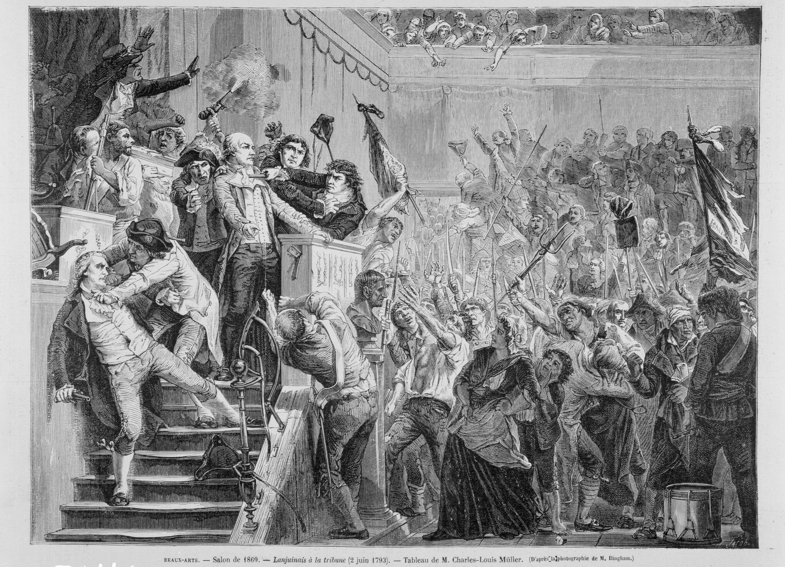
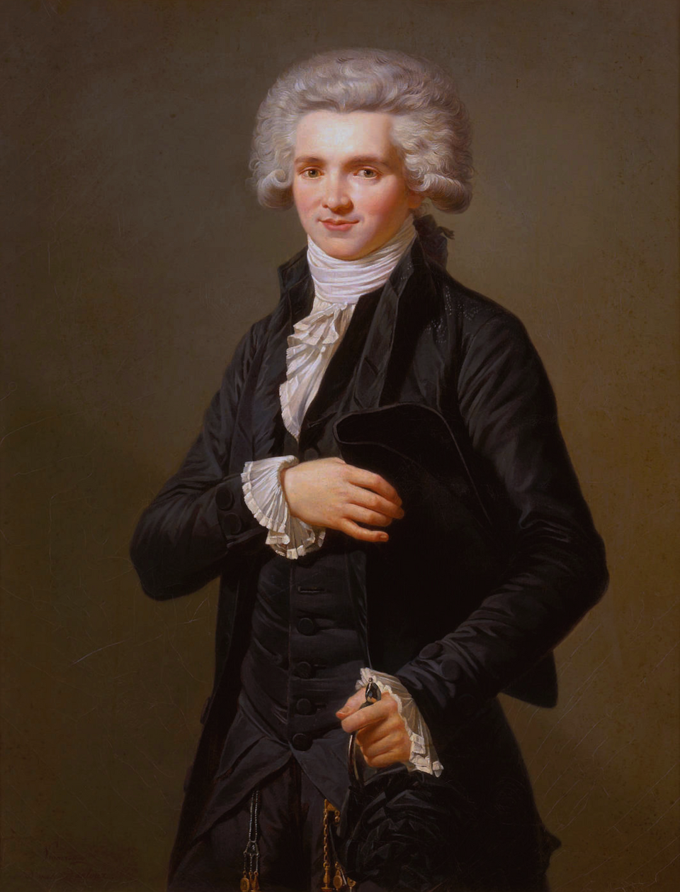
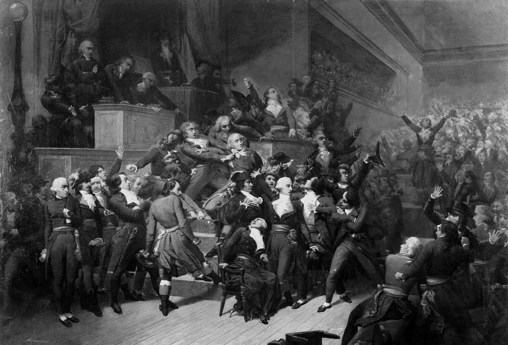
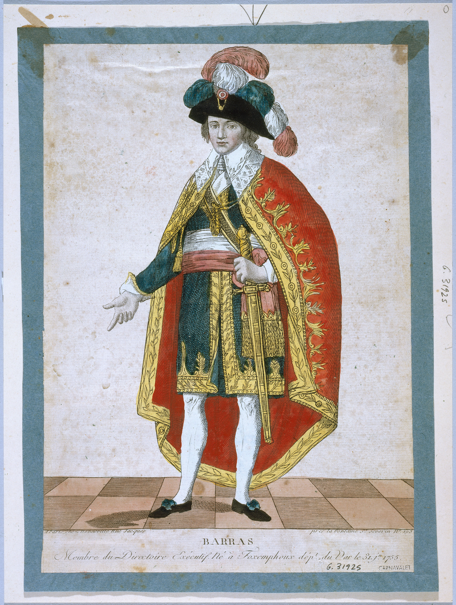

Entre 1792 et 1804, la France connaît de profonds bouleversements.
La Première République traverse plusieurs crises avant que
Napoléon Bonaparte ne prenne le pouvoir et ne fonde l'Empire.
Problématique :
Comment la République française, née en 1792, traverse-t-elle
plusieurs crises avant de devenir un Empire dirigé par Napoléon ?
Parcourez les cinq modules, observez les œuvres et répondez
aux questions pour vérifier votre compréhension.
Vous pouvez revenir librement sur les modules précédents.
Votre progression
0 / 5 modules
Votre parcours commence ici.
MODULE 1 · 1792-1793
Une République divisée
1. La naissance de la République
En septembre 1792, la Convention nationale proclame la
Première République. La monarchie est abolie et le pouvoir
n'appartient désormais plus à un roi.
Le calendrier révolutionnaire est instauré : les actes publics
doivent désormais être datés de l'an I de la République.
À retenir :
République : régime politique dans lequel le pouvoir n'appartient
pas à un roi, mais à des dirigeants élus.
2. Trois groupes politiques à la Convention
Les Girondins
Républicains modérés.
Les Montagnards
Républicains radicaux.
La Plaine
Députés du centre.
Sélectionnez un groupe pour découvrir ses idées.
3. Document historique : Lanjuinais

Portrait de Jean-Denis Lanjuinais, gravure éditée par
François Bonneville, vers 1793-1794.
Consulter la notice du musée.
Observez :
Lanjuinais est un député girondin. Son parcours permet
d'aborder les divisions politiques de la Convention.
4. Vérifiez votre compréhension
1. Quel groupe souhaite limiter l'influence politique de Paris ?
2. Pourquoi la Plaine est-elle importante ?
3. Qui soutient particulièrement les Montagnards ?
MODULE 2 · 1793-1794
La Terreur : une République menacée
1. Une République en danger
En 1793, la République est encore fragile. Elle doit faire face
à deux grandes menaces.
Menaces extérieures
Les monarchies européennes font la guerre à la France révolutionnaire.
Menaces intérieures
Des Français se soulèvent contre la République, notamment en Vendée.
2. La mise en place de la Terreur
Les Montagnards considèrent que la République doit être défendue
contre ses ennemis. Ils mettent en place un gouvernement
révolutionnaire et une politique exceptionnelle : la Terreur.
La répression : les suspects sont arrêtés,
jugés et parfois exécutés.
La construction d'une société républicaine :
nouvelles fêtes, nouveaux symboles et développement d'une
culture politique destinée à apprendre le métier de citoyen.
Robespierre devient l'une des principales figures de cette période.
À retenir :
La Terreur n'est pas seulement une période d'exécutions.
C'est une politique menée au nom de la défense de la République,
qui associe répression et transformation de la société.
3. Document : le portrait de Robespierre

Portrait de Maximilien de Robespierre, peintre anonyme,
vers 1790, musée Carnavalet.
Notice du musée.
Observez le portrait et identifiez le personnage.
Ce document ne comporte pas de questionnaire.
4. La chute de Robespierre : 9 Thermidor
Progressivement, la Terreur devient de plus en plus violente.
De nombreux députés craignent d'être eux-mêmes arrêtés.
Robespierre est de plus en plus isolé politiquement.
Le 27 juillet 1794 (9 thermidor an II), ses opposants le font
arrêter. Il est guillotiné le lendemain, le 28 juillet.
La Terreur prend fin.

Séance du 9 Thermidor, Raymond-Quinsac Monvoisin,
vers 1837, musée de la Révolution française.
Notice et analyse de l'œuvre.
Question d'observation :
Comment cette scène représente-t-elle la chute de Robespierre
et les divisions politiques de la Convention ?
1. Pourquoi la République est-elle menacée en 1793 ?
2. Quelle est une caractéristique de la Terreur ?
3. Quand Robespierre est-il guillotiné ?
5. La République et la démocratie
La Constitution de 1793 est adoptée par référendum. Elle prévoit
notamment le suffrage universel masculin et le droit à l'insurrection
contre un pouvoir tyrannique.
Le 4 février 1794, la Convention abolit l'esclavage dans les colonies
françaises. Les droits proclamés par la Révolution sont ainsi étendus
aux personnes réduites en esclavage.
Cependant, cette Constitution n'est jamais appliquée :
le gouvernement révolutionnaire suspend son application
jusqu'au retour de la paix.
Démocratie : régime politique dans lequel le pouvoir
est exercé par le peuple.
MODULE 3 · 1794-1799
Le Directoire : une République instable
1. Après Thermidor
Après la chute de Robespierre, les députés thermidoriens
cherchent à mettre fin au gouvernement révolutionnaire
et à éviter une nouvelle concentration des pouvoirs.
En 1795, une nouvelle Constitution met en place le Directoire.

Portrait de Paul Barras, figure politique du Directoire.
Œuvre et attribution à compléter selon la reproduction choisie.
2. Comment fonctionne le Directoire ?
Le pouvoir exécutif : cinq Directeurs.
Le pouvoir législatif : deux assemblées.
Le Conseil des Cinq-Cents propose les lois.
Le Conseil des Anciens les adopte ou les rejette.
Ce système cherche à empêcher qu'un seul homme ou qu'un seul
groupe puisse concentrer tous les pouvoirs.
3. Les difficultés du régime
Une forte instabilité politique.
Des difficultés économiques.
Des oppositions entre les différentes tendances politiques.
La République reste fragile.
1. Pourquoi le pouvoir est-il partagé ?
2. Combien de Directeurs exercent le pouvoir exécutif ?
3. Quelle difficulté caractérise le Directoire ?
MODULE 4 · 1799
Le coup d'État du 18 Brumaire
1. L'ascension de Napoléon Bonaparte
Napoléon Bonaparte est un général qui connaît de nombreux succès
militaires. Il devient populaire dans une France marquée
par les difficultés du Directoire.